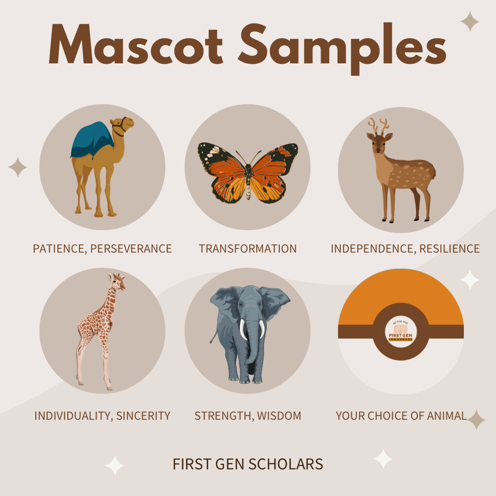

First Gen Scholars
As a designer for First Gen Scholars, I worked with other first-generation students and staff to highlight the stories of first-generation students through designing flyers and advertisements. Additionally, I created infographics for First Gen Scholars' social media pages to feature announcements about scholarships and events. Every week, I attended Zoom meetings which alternated between board and club sessions, where I shared my ideas and gained insight from other board members. This role allowed me to enhance my time management, communication, and teamwork skills, while also offering a platform to express my creativity. Below are examples of the infographics I designed for the program!

